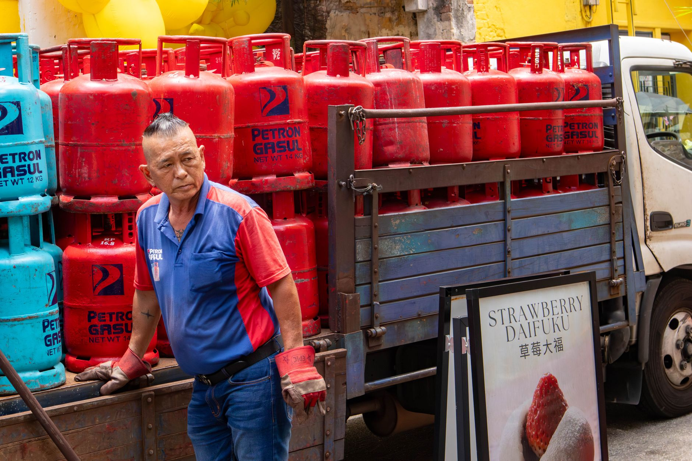

광산 아닌 수출통제가 무기, 자원전쟁 규칙 바뀌었다

중국은 2023년 7월 갈륨·게르마늄 수출통제를 시작으로 2023년 12월 흑연, 2024년 상반기 희토류 가공품, 2025년 안티몬·초경합금 소재, 2026년 헬륨까지 수출 제한 품목을 순차 확대했다. 3년 만에 통제 품목이 6개 광물군 이상으로 늘었으며, 갈륨 국제 현물가는 2023년 7월 대비 2026년 8월 기준 약 9배 수준까지 상승했다.
광산 확보 전략과 수출통제 전략의 속도 차이가 핵심이다. 신규 광산 개발에서 상업 생산까지 평균 10~16년이 걸리는 반면, 수출 통제 시행령 발효는 공고 후 30일이면 충분하다. 중국은 이 비대칭성을 의도적으로 활용하고 있으며, 미국 지질조사국(USGS)이 2025년 발표한 보고서에서도 '생산 집중도보다 수출 허가 집중도가 더 즉각적인 리스크'라고 명시했다.
통제 패턴을 분석하면 세 단계 구조가 보인다. 1단계: 가격 교란(수출 허가 지연으로 현물가 급등 유도), 2단계: 선택적 해제(특정 국가·기업에 허가를 내주며 지정학적 레버리지 행사), 3단계: 공급망 재편 강제(수입국이 대체 소싱 구조를 만들 때까지 봉쇄 유지). 갈륨의 경우 일본에 4개월 만에 수출을 재개했으나 한국에는 별도 기준을 적용하는 것으로 알려졌다.
수출통제 무기화의 파급 범위가 전통 자원 분야를 넘어섰다. 헬륨은 반도체 공정 냉각·리크 테스트 필수 가스로, 전 세계 공급의 약 7%를 중국이 담당한다. 절대 비중은 크지 않지만 대체 공급처(미국·카타르)의 장기 계약 여력이 제한적이어서 단기 충격 강도는 갈륨·게르마늄에 준한다. 반도체 팹 1곳의 헬륨 연간 소비량은 약 100~300만 리터 수준이다.
자원전쟁의 전장이 지리(광산 위치)에서 제도(수출 허가 체계)로 이동했다. 이는 광산 지분 투자나 장기 공급계약이 더 이상 충분한 헤지 수단이 아님을 의미한다. 실제로 일본 스미토모와 독일 헤레우스는 갈륨 장기 공급계약을 보유하고 있었음에도 2023년 7월 통제 이후 수개월간 물량을 확보하지 못했다. 계약서에 '수출허가 취득 불가 시 면책' 조항이 삽입된 것이다.
한국에게 이 구도가 의미하는 바는 명확하다. 광물 확보 외교와 함께 '수출 허가 우선 국가 지위(preferential licensing status)' 획득 협상을 병행해야 한다. 일본이 갈륨 수출을 4개월 만에 재개받은 배경에는 일중 경제 채널 복원 협상과 희토류 대체 루트 공동 개발 양해각서(MOU)가 있었던 것으로 업계는 분석한다. 한국은 이에 상응하는 협상 카드를 아직 테이블에 올리지 못한 상태다.
미국·캐나다·호주 등 MRSM(핵심광물 공급망 재편) 파트너십 국가들은 단기 반사이익을 누린다. 미국 MP Materials(희토류), 캐나다 Teck Resources(인듐·게르마늄 대체), 호주 Lynas(희토류 가공)의 주가는 중국 통제 확대 발표 시마다 평균 8~15% 급등 패턴을 보여왔다. 다만 이들의 실제 공급 능력이 중국 대체재로 자리잡으려면 2028~2030년은 되어야 한다는 게 현장 판단이다.
수출통제 컨설팅·통관 전문 법무 서비스 시장도 수혜권에 있다. 글로벌 수출통제 컴플라이언스 시장 규모는 2025년 45억 달러에서 2030년 90억 달러로 두 배 성장이 예측된다(Markets&Markets 2025). 국내에서도 율촌·김앤장 등 대형 로펌의 수출통제 자문 수임료가 2023년 대비 3배 이상 증가한 것으로 전해진다.
수출통제 대상 품목 의존도가 높은 한국 반도체·디스플레이 소재 기업이 직격탄을 맞는다. 갈륨 기반 GaN 파워 반도체 소재를 중국산에 90% 이상 의존해온 국내 기업들은 원가 구조가 2023년 대비 3~4배 악화됐다. 디스플레이용 인듐 역시 중국 공급 비중이 65%를 넘어 통제 확대 시 OLED 패널 소재 원가에 즉시 반영된다.
광산 지분 확보에 수십억 달러를 투자한 일부 국가 펀드와 자원 기업들은 전략 재평가가 불가피하다. 광산 보유가 수출 허가 없이는 무용지물임이 입증되면서, 광산 투자 대비 수출허가 네트워크 투자의 ROI 역전이 본격화되고 있다.
기업 구매담당자라면 지금 당장 품목별 중국 수출 허가 의존도를 재점검해야 한다. 단순 '중국산 비중'이 아니라 '중국 정부 수출 허가 없이는 조달 불가한 품목'의 목록을 별도 작성하는 것이 핵심이다. 이 목록에 오른 품목부터 우선순위를 정해 대체 소싱 타임라인을 2026년 내 확정해야 한다.
산업 전략가에게는 '광산 확보 예산의 30%를 수출허가 외교 및 컴플라이언스 인프라로 전환'하는 포트폴리오 재조정을 권고한다. 일본 JOGMEC이 2025년 예산의 25%를 수출허가 우선국 협상 및 대체 루트 개발에 배정한 것은 이미 이 방향의 선례다. 한국광물자원공사(KORES) 역시 같은 전환이 필요한 시점이다.
개인 투자자 관점에서는 광산주보다 가공·정제·대체소재 기업에 주목할 것을 권한다. 수출통제는 원광보다 가공 단계에서 병목을 만든다. 중국 외 지역에서 갈륨·게르마늄·인듐 정제 역량을 가진 기업(벨기에 Umicore, 일본 Dowa Mining 등)의 수주 잔고가 2025~2026년 사이 평균 40% 이상 증가했다.
실제 조달 현장에서는 — 수출통제 확대 발표 이후 첫 30~60일이 가장 혼란스럽고 이 시기에 현물 확보 비용이 가장 가파르게 오른다. 2023년 갈륨 통제 직후 현장에서 확인한 패턴은 '허가 신청 서류 준비 지연 → 통관 적체 → 현물 프리미엄 30~50% 가산'이었다. 이 패턴을 알고 있는 기업은 통제 예고 시점부터 즉시 서류 준비와 대체 재고 확보를 병행 가동해야 한다. 헬륨의 경우 지금이 바로 그 예고 단계다.
이 포스팅은 쿠팡 파트너스 활동의 일환으로 수수료를 제공받습니다.